这个蛋糕是给绿豆一周岁生日准备的，一个人哄着孩子做蛋糕，虽然有些捉急，但还是颇具挑战性的。
绿豆，生日快乐！
用料
- 低筋面粉 180克
- 玉米油 60克
- 牛奶 60克
- 细砂糖 90克
- 鸡蛋 5个
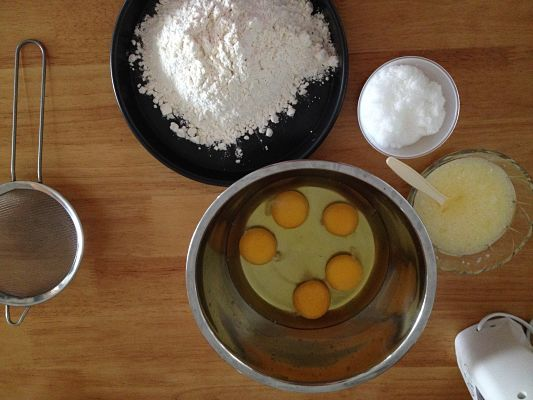
做法
1. 鸡蛋打发
将细砂糖加入鸡蛋盆中，准备开打。开打前，要提前准备好一盆温度在50度上下的热水，将打蛋盆坐在上面进行打发。
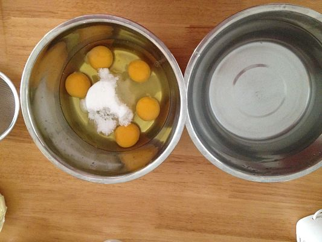
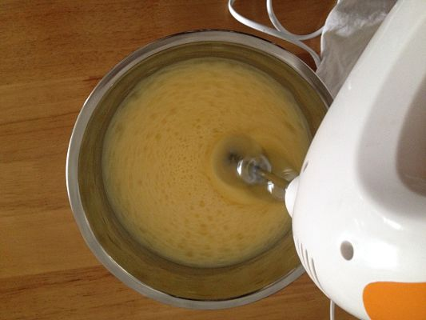
2. 打发成功
随着不断的搅打，蛋液颜色会越来越浅，气泡由多到少，大气泡逐渐消失，蛋液组织慢慢变的细腻且浓稠光滑，提起打蛋器画 8 字，8 字清晰的在盆里保存一段时间，并不会很快消失，全蛋已经打发成功了。
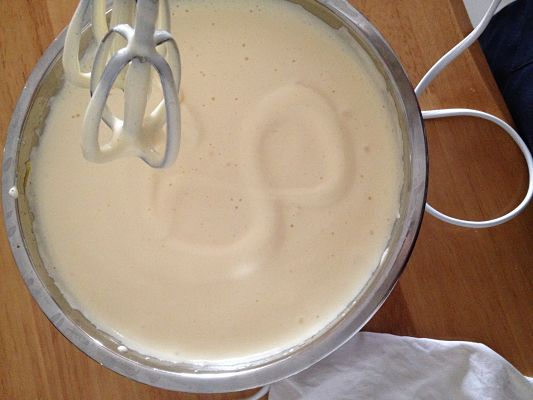
3. 筛入面粉
筛入面粉，用橡皮刮刀从底部向上翻拌使面粉和蛋糊混合均匀，翻拌时手法尽量轻柔避免过度消泡，全蛋打发状态比较容易消泡。
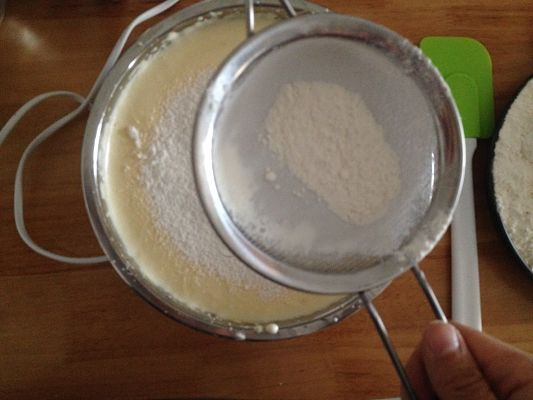
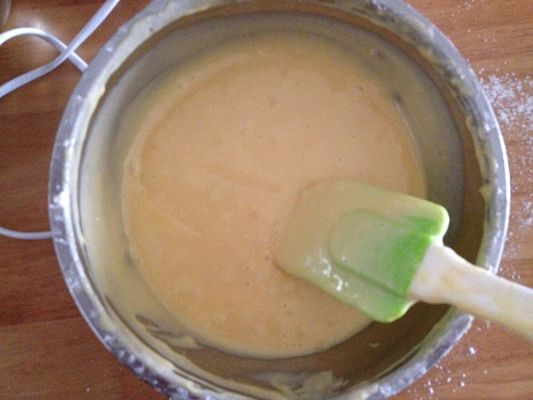
4. 混合阶段
先取一部分面粉蛋糊与牛奶和植物油的混合液（事前已将牛奶与植物油混合均匀）拌匀，然后再倒回到打蛋盆中与全部面粉蛋糊混合均匀。
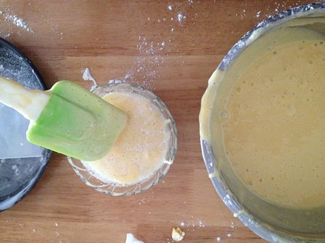
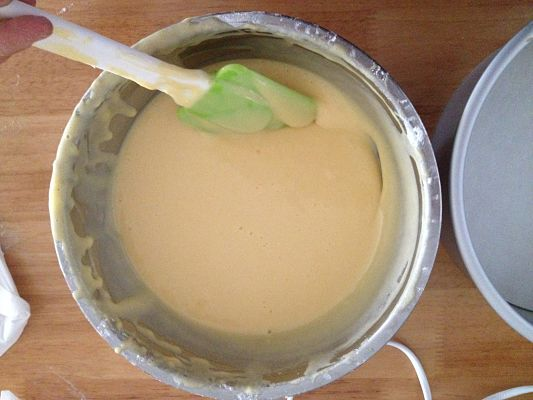
5. 入模阶段
大混合之后，将混合体倒入模具中，双手执模具从10厘米左右的高度震落两次，把内部的大气泡震出（混合液可以盛满模具高度的四分之三为佳）。
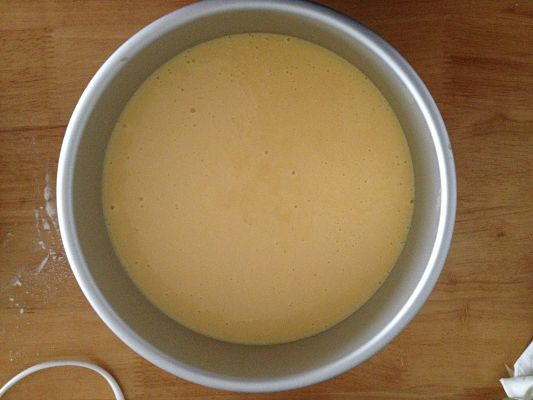
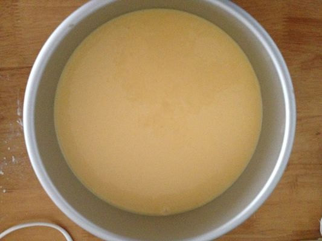
6. 烤制阶段
烤箱预热，将烤盘送入中下层、150度、40分钟（如上色很快，可以在上面盖一层锡纸以免表层焦糊），插入牙签不会带出里面的组织就烤好了。
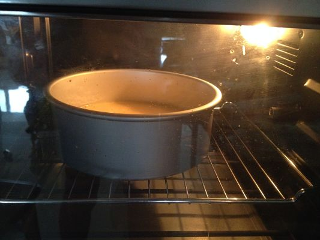
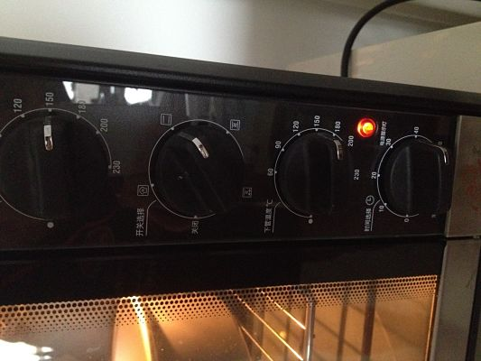
7. 冷却脱模
将模具倒扣在烤网上冷却，完全冷却后脱模。
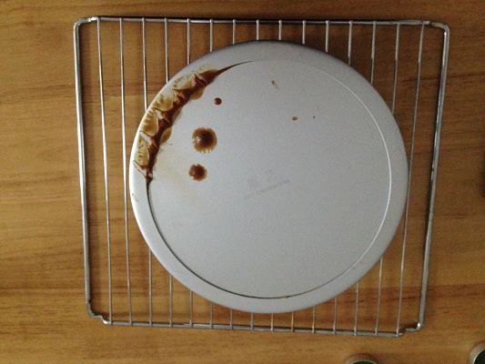
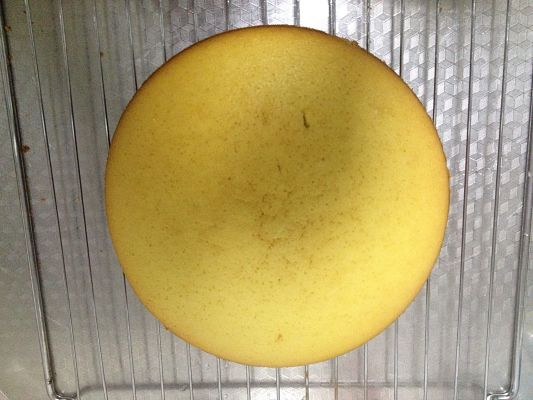
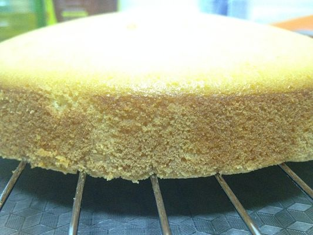
8. 装裱阶段
趁海绵胚冷却的时候将淡奶油加糖进行打发(淡奶油打发前冷藏一下，打起来比较容易），打好后再冷藏备用。
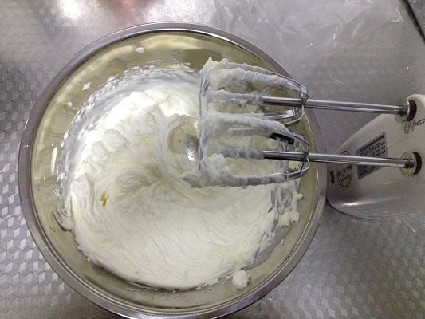